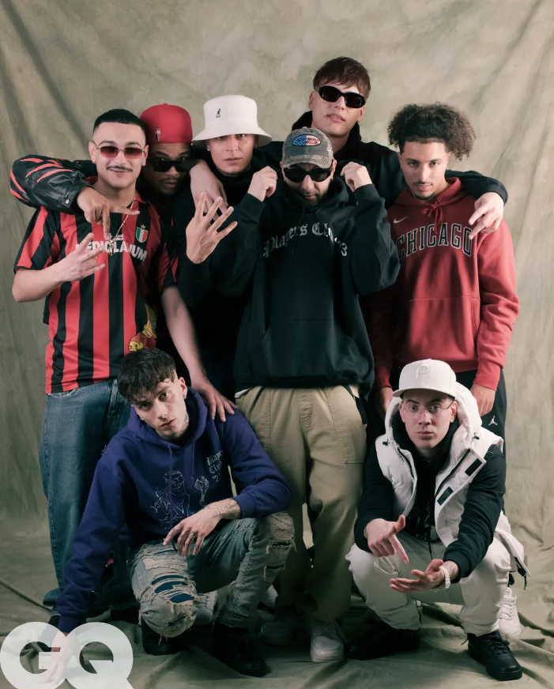
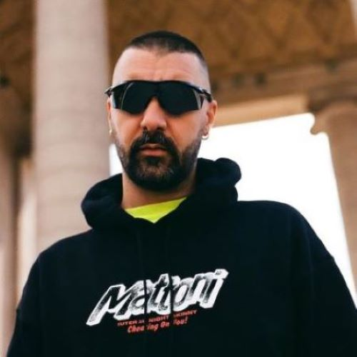

Players Club 23 è il second impact del rap italiano
Vediamo da vicino perché “Players Club ’23” (Knights Of The Posse) si candida a rappresentare il Second Impact del rap italiano
Il 19 Aprile 2023 dopo i numerosi spoiler sui vari canali social degli artisti coinvolti è uscita la posse track di Night Skinny in collaborazione con: Nerissima Serpe, Artie 5ive, Tony Boy, Papa V, Low-Red, Digital Astro e Kid Yugi. Ci troviamo davanti ad uno dei prodotti più inaspettati e allo stesso tempo interessanti dell’anno per una serie di motivazioni. Night Skinny dopo l’enorme successo del suo producer Album “Botox” (che abbiamo recensito qui) decide di prendersi lo spazio da Mecenate della scena dando spazio, su una sua produzione, alle nuove leve dell’industria italiana. Il producer ha creatore un qualcosa che, vista la qualità del risultato, ci riporta ad un concetto di coesione tra gli emergenti simile a quella vista con l’ormai celebre “Bimbi”: l’unione di quella scena, come ben sappiamo, ha rivoluzionato l’industria nel 2016. Ora noi non siamo qui per fare paragoni qualitativi poiché sarebbe ingiusto e alquanto sterile, piuttosto mi soffermerei sull’impatto generato dai due eventi e sulle motivazioni che lo hanno creato.
Se guardiamo il corso degli eventi con una visione ciclica, si arriverà ad un punto di massimo splendore che, purtroppo o per fortuna, verrà susseguito da un periodo di buio. L’incontro di questi due momenti rimescolerà le carte, creando un qualcosa di nuovo in una nuova sintesi. Questa la chiave di lettura filo-hegeliana ci aiuterà a capire le motivazioni di questi due eventi fondamentali della nostra scena. In entrambi i casi ci siamo trovati davanti a un’industria musicale che, dopo un periodo florido, ha vissuto nella stagnazione ed è proprio da questa condizione che è partito il decollo. Se nel primo caso avevamo bisogno di un qualcosa di nuovo che ribaltasse gli schemi offrendo agli ascoltatori un prodotto inedito, nel secondo la situazione storica è ben diversa. Il 2016 ha portato il Rap/la Trap nelle classifiche, di conseguenza, facendo diventare il genere mainstream, si è allargato anche il bacino d’utenza degli ascoltatori e degli emulatori sempre più accecati da quel lusso e da quello stile di vita importato dall’America dai pionieri della scena nostrana. Chi prima, da bambino, voleva fare il calciatore per la vita che conduceva, dopo il 2016, vuole fare il rapper. C’è stato un cambio di paradigma. Un numero sempre più considerevole di ragazzi si sono approcciati al genere per spirito di emulazione più che per passione (cosa che muoveva i ragazzi della scena 2016), portando una quantità enorme di prodotti senza identità, avendo come scopo principale la notorietà. Questo periodo buio forse vede la fine.
